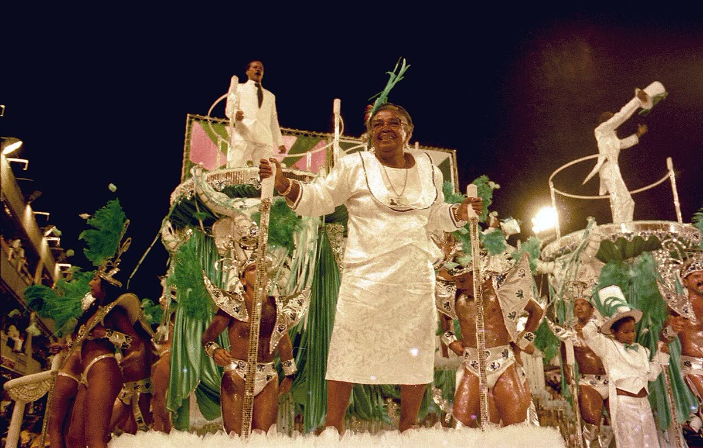
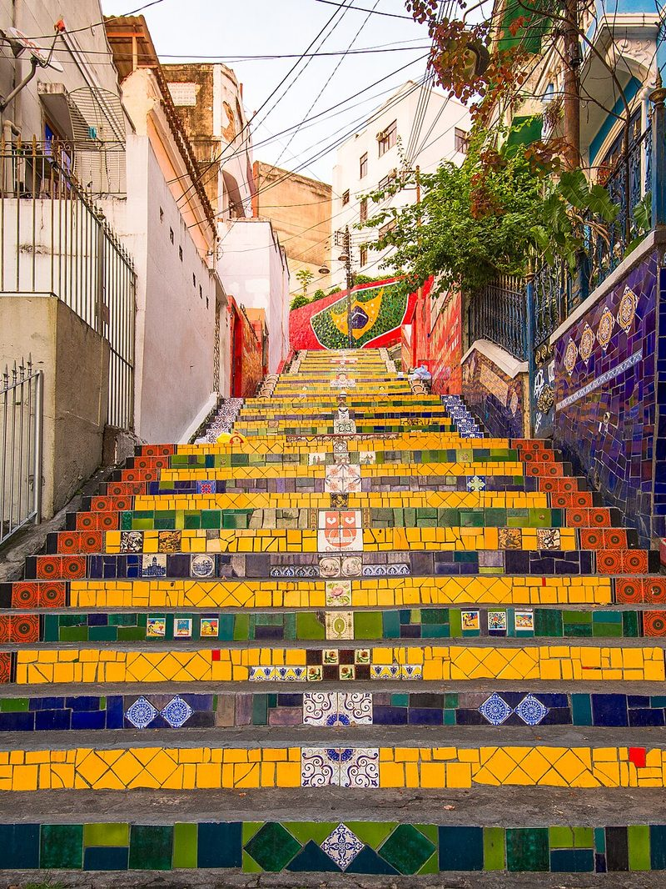
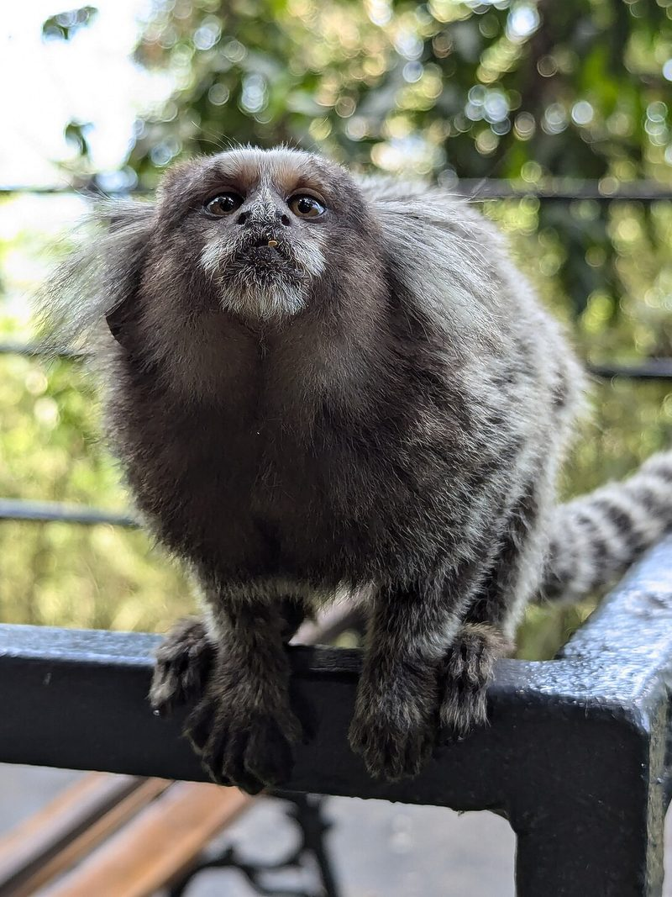
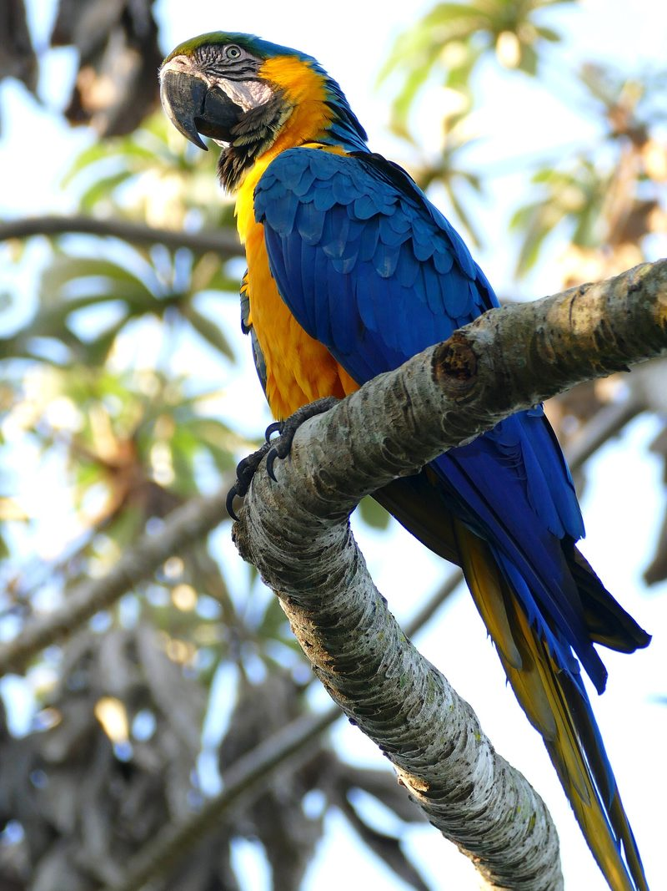

Destinations
Six places that between them cover the coast, the colonial towns, the rainforest and the desert-and-lagoon landscape of the north east.
See the destinationsA travel guide to Brazil
Expert travel guides, smart itineraries and local tips to help you experience the real Brazil in every region.
Start here
Three short guides. Read them in any order, since each one stands on its own.
Six places that between them cover the coast, the colonial towns, the rainforest and the desert-and-lagoon landscape of the north east.
See the destinations
Where samba and bossa nova came from, what actually happens during Carnival, and the food you should not leave without trying.
Read about the culture
Getting there from Ireland, the seasons that run backwards, money, language, plugs, and the paperwork to check before you book.
Plan the tripThe country
Brazil takes up almost half of South America and shares a border with every country on the continent except Chile and Ecuador. It is the only Portuguese-speaking nation in the Americas, which catches a lot of first-time visitors out. Spanish will not get you very far.
The distances are the thing people underestimate. Rio to the Amazon is further than Dublin to Moscow, so most first trips pick one or two regions rather than trying to cover the country.
Photographs
Three things travellers tend to remember longer than the postcards.


